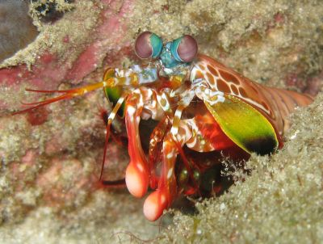
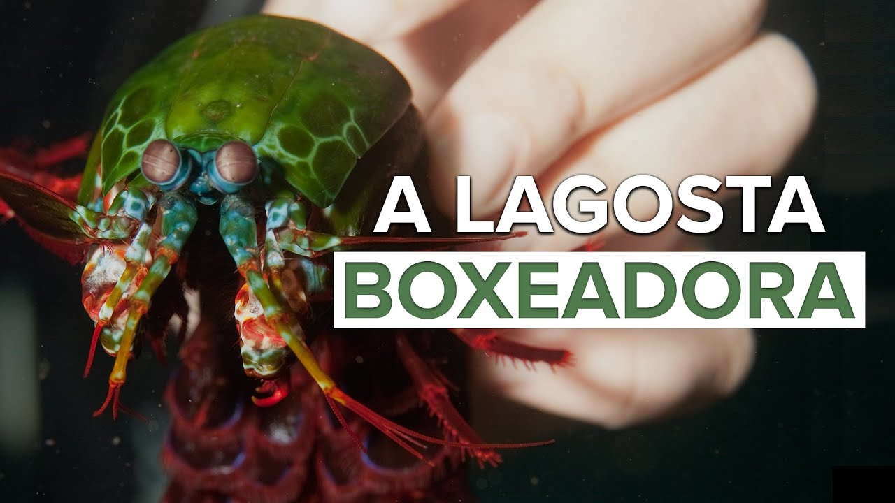

Fatos sobre o Stomatopoda!
Dê uma olhadinha no belíssimo animal. Ele tem uma aparência incrível, não é mesmo? Com tantas cores e cheio de estruturas interessantes.
O “mantis shrimp”, conhecido por vários nomes, como lagosta-boxeadora, tamarutaca e esquila, realmente é fantástico.
Tanto que o pessoal do site The Oatmeal criou um infográfico superinformativo especialmente para esse crustáceo.
Nome Cientídico: Odontodactylus scyllarus.
| Reino: | Animalia |
|---|---|
| Filo: | Arthropoda |
| Subfilo: | Crustacea |
| Classe: | Malacostraca |
| Subclasse: | Hoplocarida |
| Ordem: | Stomatopoda |
Home:
A lagosta-boxeadora constroi túneis em forma de U, debaixo de substrato solto na base de recifes de corais, que podem chegar a ter 3 a 40 m de profundidade. É para este túnel que muitas vezes traz as presas que mata ou imobiliza. Captura preferencialmente gastrópodes, crustáceos e bivalves e esmurraça repetitivamente até ter acesso ao tecido mole para se alimentar.

Seu murro!
São capazes de enfiar um murro a uma velocidade superior aos 80 km/h. Este é o murro mais rápido anotado de qualquer animal existente, com mais de 1500 N de força. A superfície dos seus apêndices que desferem os punhos são cobertos com uma camada extremamente densa de hidroxiopatite, disposta de uma maneira muito resistente à possibilidade de fracturar.

Sua visão!
Os fotorreceptores de um Tamarutaca são dispostos numa série de canais que vão do vermelho ao ultravioleta. Eles permitem que os animais vejam cores invisíveis a outros bichos , desde o ultravioleta até o infravermelho, inclusive variações não conhecidas no espectro da luz, tudo isso sem exigir grande processamento do nosso cérebro. Isso faz deles os bichos com os olhos mais complexos de todo o reino animal.